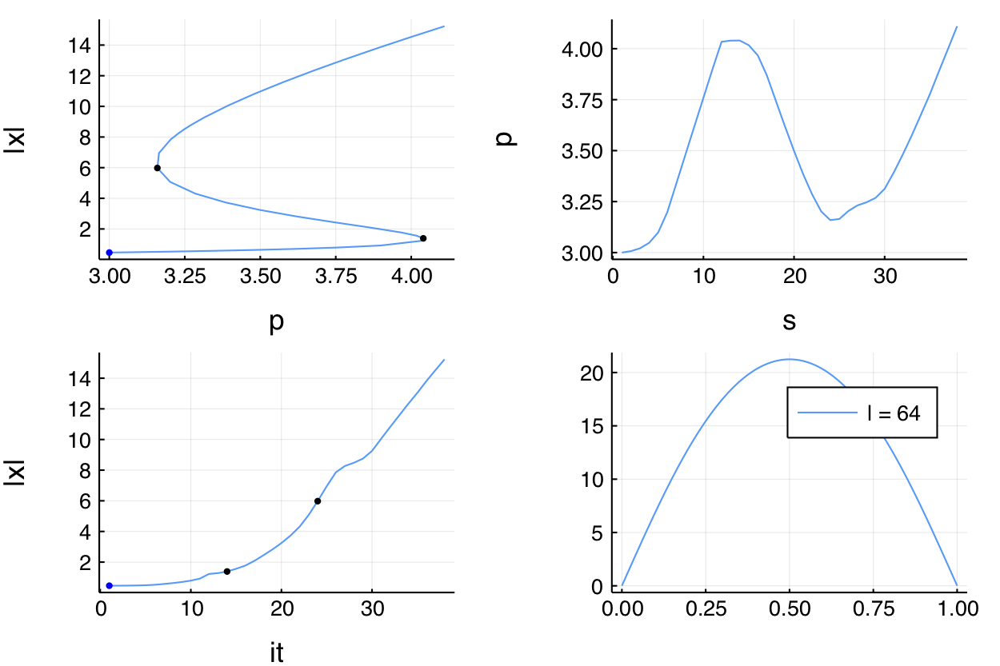

Temperature model with ApproxFun (intermediate)
We reconsider the first example by relying on the package ApproxFun.jl which allows very precise function approximation.
This is one example where the state space, the space of solutions to the nonlinear equation, is not a subtype of
AbstractArray. See Requested methods for Custom State for more informations.
We start with some imports:
using ApproxFun, LinearAlgebra, Parameters, Setfield
using BifurcationKit, Plots
const BK = BifurcationKitWe then need to add some methods not available in ApproxFun because the state space is not a subtype of AbstractArray:
# specific methods for ApproxFun
import Base: eltype, similar, copyto!, length
import LinearAlgebra: mul!, rmul!, axpy!, axpby!, dot, norm
similar(x::ApproxFun.Fun, T) = (copy(x))
similar(x::ApproxFun.Fun) = copy(x)
mul!(w::ApproxFun.Fun, v::ApproxFun.Fun, α) = (w .= α * v)
eltype(x::ApproxFun.Fun) = eltype(x.coefficients)
length(x::ApproxFun.Fun) = length(x.coefficients)
dot(x::ApproxFun.Fun, y::ApproxFun.Fun) = sum(x * y)
axpy!(a, x::ApproxFun.Fun, y::ApproxFun.Fun) = (y .= a * x + y)
axpby!(a::Float64, x::ApproxFun.Fun, b::Float64, y::ApproxFun.Fun) = (y .= a * x + b * y)
rmul!(y::ApproxFun.Fun, b::Float64) = (y.coefficients .*= b; y)
rmul!(y::ApproxFun.Fun, b::Bool) = b == true ? y : (y.coefficients .*= 0; y)
copyto!(x::ApproxFun.Fun, y::ApproxFun.Fun) = ( (x.coefficients = copy(y.coefficients);x))We can easily write our functional with boundary conditions in a convenient manner using ApproxFun:
N(x; a = 0.5, b = 0.01) = 1 + (x + a*x^2)/(1 + b*x^2)
dN(x; a = 0.5, b = 0.01) = (1-b*x^2+2*a*x)/(1+b*x^2)^2
function F_chan(u, p)
@unpack alpha, beta = p
return [Fun(u(0.), domain(u)) - beta,
Fun(u(1.), domain(u)) - beta,
Δ * u + alpha * N(u, b = beta)]
end
function Jac_chan(u, p)
@unpack alpha, beta = p
return [Evaluation(u.space, 0.),
Evaluation(u.space, 1.),
Δ + alpha * dN(u, b = beta)]
endWe want to call a Newton solver. We first need an initial guess and the Laplacian operator:
sol = Fun(x -> x * (1-x), Interval(0.0, 1.0))
const Δ = Derivative(sol.space, 2)
# set of parameters
par_af = (alpha = 3., beta = 0.01)Finally, we need to provide some parameters for the Newton iterations. This is done by calling
optnewton = NewtonPar(tol = 1e-12, verbose = true)We call the Newton solver:
out, = @time BK.newton(F_chan, Jac_chan, sol, par_af, optnewton, normN = x -> norm(x, Inf64))and you should see
┌─────────────────────────────────────────────────────┐
│ Newton Iterations f(x) Linear Iterations │
├─────────────┐──────────────────────┐────────────────┤
│ 0 │ 1.5707e+00 │ 0 │
│ 1 │ 1.1546e-01 │ 1 │
│ 2 │ 8.0149e-04 │ 1 │
│ 3 │ 3.9038e-08 │ 1 │
│ 4 │ 7.9049e-13 │ 1 │
└─────────────┴──────-───────────────┴────────────────┘
0.103869 seconds (362.15 k allocations: 14.606 MiB)We can also perform numerical continuation with respect to the parameter $\alpha$. Again, we need to provide some parameters for the continuation:
optcont = ContinuationPar(dsmin = 0.0001, dsmax = 0.05, ds= 0.005, pMax = 4.1, plotEveryStep = 10, newtonOptions = NewtonPar(tol = 1e-8, maxIter = 20, verbose = true), maxSteps = 200)We provide a callback function to check how the ApproxFun solution vector grows during the continuation:
function finalise_solution(z, tau, step, contResult; k...)
printstyled(color=:red,"--> AF length = ", (z, tau) .|> length ,"\n")
true
endThen, we can call the continuation routine
br, = @time continuation(F_chan, Jac_chan, out, par_af, (@lens _.alpha), optcont,
plot = true,
plotSolution = (x, p; kwargs...) -> plot!(x; label = "l = $(length(x))", kwargs...),
verbosity = 2,
normC = x -> norm(x, Inf64))and you should see
